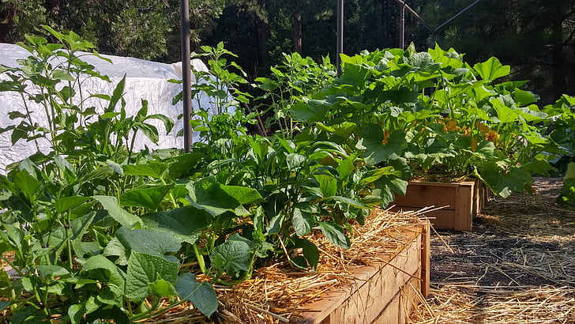
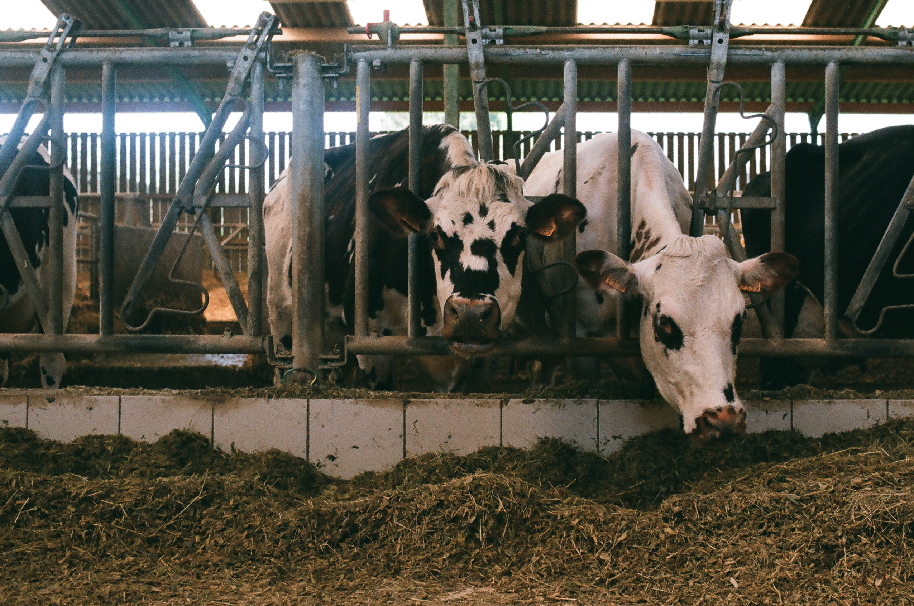
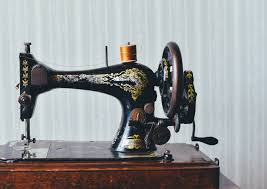
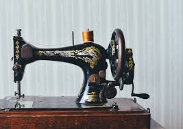
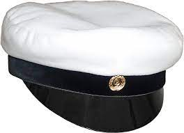
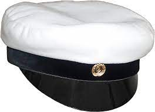

Opiskeluhistoriani
Olen opiskellut vähän kaikkea laidasta laitaan. Teini-iässä kävin 4H-puutarhakurssin.
Sitten parikymppisenä kävin maatalouslomittajan kurssin, mutta ei sattunut sopivaa isäntämiestä kohdalle!
Roihuvuoressa kävin muoti- ja vaatteet kurssin.
 

Kolmekymppisenä suoritin Kemissä merkonomin ja ylioppilaan tutkinnot, mutta niitä töitä ei sitten valmistumiseni jälkeen ollutkaan tarjolla.
 

Työnohessa on hankittu prosessoijan perustutkinto AEL:ssä, 2-vuotisella oppisopimuskoulutuksella.
Työhistoriani
Kesätyöt aloitin 12-vuotiaana, olin lapsenvahtina pari kesää.
14- vuotiaana olin jo ravintolan keittiössä apulaisena,(lue:potunkuorija et tiskaaja!).
Peruskoulun päätyttyä mailma kutsui, päädyin Tampereelle. Olin töissä Tampella-Tamrocissa lähettinä.
Sitten olin Nansolla teollisuusompelijana.
Työhistoriani on kirjava kuin kerjäläisen tilkkupaita, ompelimoja, ravintoloita, maatiloja ja piikiekkotehdas.
Viimeisin työpaikkani oli piikiekkotehdas Vantaalla, sielläkin tuli oltua viisitoista vuotta.